Angular-way,
czyli którędy?
Grzegorz Biziel
Uniwersytet Ekonomiczny we Wrocławiu
21 maja 2015
Angular-way
=
dobry software
+
wykorzystanie wzorców oferowanych przez angulara
I. Rozdział logiki i szablonu
Wzorzec MVVM

Jak to wygląda w angularze*

*w pewnym uproszczenia, bo "controller" != "model"
Bez rozdziału na model i widok:
$.ajax({
url: '/endPoint',
success: function ( data, status ) {
$('ul#messages').append('
Operation successful!
');
}
});
Template:
message.text
Controller:
$http.get('/endPoint').then(
function(data, status){
$scope.messages.append({text:'Operation successful!'});
}
);
Dlaczego tak jest angular-way?
- Szablon nie zawiera kodu
- Szablon jest semantyczny
- Controller nie zawiera szablonu
- podsumowując: Separation of concerns
II. Podział logiki i szablonu
Dyrektywy - rozszerzenie HTMLa
Cele:
- Izolacja operacji na DOM
- Tworzenie re-używalnych komponentów
- Semantyczny HTML
Dyrektywy obsługując event przeglądarki
.directive('logMouseup', function () {
return {
restrict: 'A',
link: function (scope, element) {
element.on('mouseup', function(evt){
console.log(
'x = ' + evt.clientX + '; y = ' + evt.clientY);
}
}
}
});
Dyrektywy mogą się komunikować poprzez kontrolery
.directive('dragValidator', function () {
return {
require: 'ngModel',
restrict: 'A',
link: function (scope, element, attrs, ngModelCtrl) {
element.on('mouseup', function(evt){
if(evt.clientX > 1000){
ngModelCtrl.$setValidity('range', false);
}
}
}
}
});
III. Jeszcze głebszy podział logiki
Service, factory, provider
VI. Granice podziału
$q i obietnice
Obietnica (promise) to struktura mająca zapewnić połączenie między elementami kodu, z których
jeden mógł się jeszcze nie wykonać.
Ten łączący element jest obietnicą pewnej wartości.
Działanie obietnice
var promise = $http.get('/endPoint');
promise.then(endPointSuccessFn, endPointErrorFn);
var promise = endPointService.get();
promise.then(endPointSuccessFn, endPointErrorFn);
Oczekiwanie na wiele rezultatów
var promise1 = endPointService1.get();
var promise2 = endPointService2.get();
$q.when([promise1, promise2])
.then(allEndPointsSuccessFn, anyEndPointErrorFn);
Miodzio, spróbujcie to napisać na callbackach (⌐ ͡■ ͜ʖ ͡■)
Promise - zalety
- brak konieczności przekazywania callbacków jako argument
- naturalny kierunek przepływu - to usługa zwraca obietnice czegoś, zamiast
przyjmować callback
- ułatwiają łączenie/oczekiwanie na wiele rezultatów